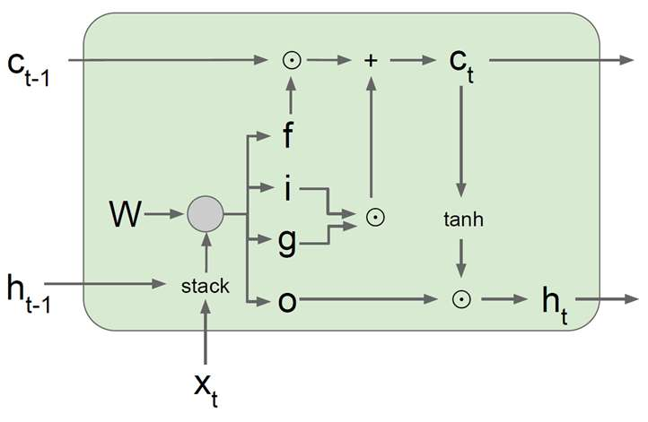
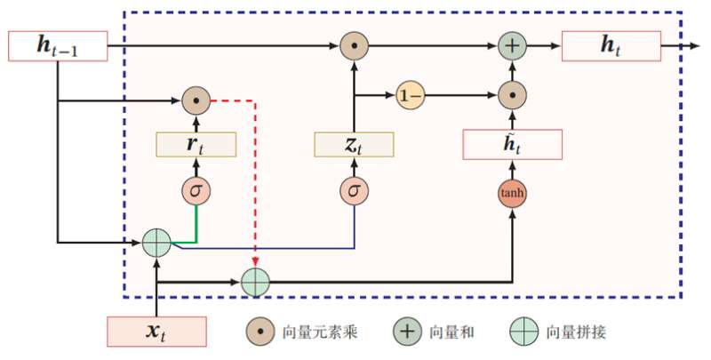

循环神经网络（Recurrent Neural Networks，RNN）
RNN是一种具有环路结构的神经网络，其内部隐藏状态随每个时刻的输入进行更新，适合用于处理时序数据。
- 原理
给定一个输入序列 $x_{1:T}=(x_1, x_2, …, x_t, …, x_T)$，在$t$时刻，网络的隐藏状态根据下式进行更新
在$t$时刻，网络的输出为
其中，$x_{t}$ 表示 $t$ 时刻网络的输入，函数 $f_W$及其参数 $W$ 、函数 $f_{W_{hy}}$ 及其参数 $W_{hy}$ 在每个时刻都保持不变。从上述式子可知，$h_t$ 不仅与当前时刻的输入 $x_t$ 有关，也和上一个时刻的隐藏状态 $h_{t-1}$ 有关。
- 缺陷
可以使用反向传播算法对RNN进行训练。RNN的机制决定了其梯度在反向传播过程中存在累积现象，导致其具有梯度消失或梯度爆炸缺陷。长短期记忆网络和门控循环单元引入门控机制调节信息的去留，缓解了梯度消失问题。
长短期记忆网络（Long Short Term Memory networks，LSTM）

门控循环单元（Gated Recurrent Units，GRU）

参考资料
- 邱锡鹏，飞桨教材编写组. 神经网络与深度学习[M]. 北京：机械工业出版社, 2020.04.